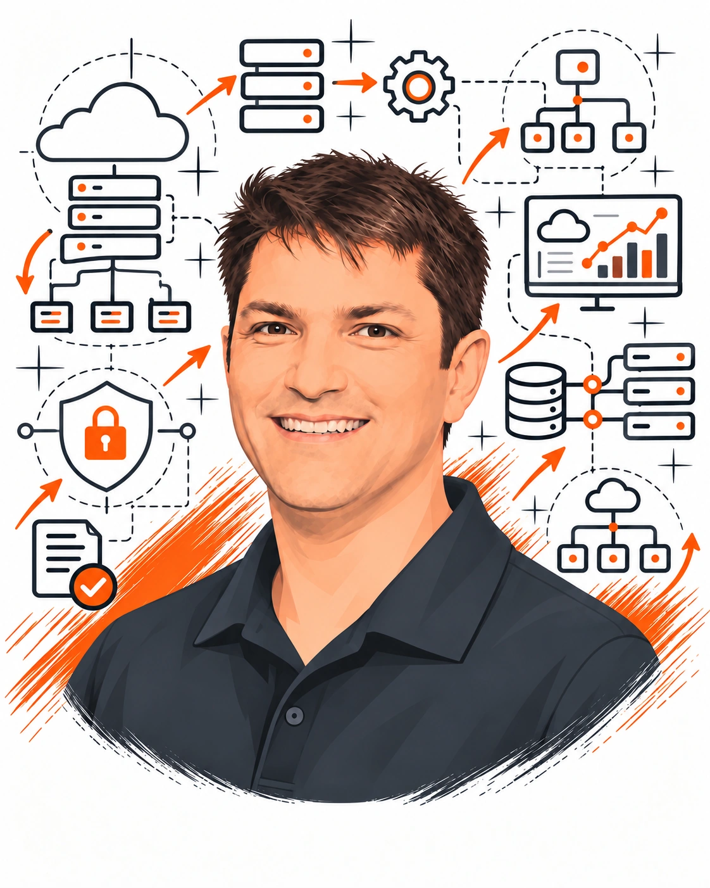
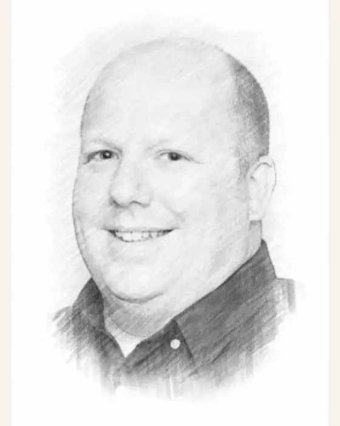
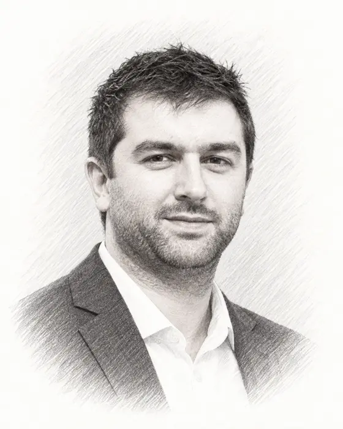

Business experience. Technical depth. People you can work with.
We have developed products, led commercial and technology decisions, worked through quality problems and kept critical systems running. Those responsibilities shape how we build AI for your business.
You need someone to understand the work, someone to engineer the system and a team to keep it running. Wayne, James and Simon bring that combination.

Wayne
Wayne brings more than two decades of technology experience, including co-founding and growing a managed technology business. He has helped organisations move to the cloud, strengthen security and improve the systems their people depend on every day.
His strength is connecting technology decisions with business realities: what needs protecting, where to invest and how to keep operations running as the business changes.
Why it mattersWayne helps make sure your cloud colleague fits the wider business, with security, reliability and ongoing support considered from the beginning.

James
James is a senior systems and network engineer with experience across AWS, Microsoft technologies and the practical work of moving businesses to the cloud. As co-founder of a managed technology business, his experience spans building systems, connecting them and supporting the people who use them.
He brings that hands-on understanding to FUSED: how information moves between systems, how to test that things work properly and how to find and fix problems.
Why it mattersJames turns the proposed role into a working colleague, connecting the tools it needs and building in the checks that help keep its work dependable.

Simon
Simon is a qualified engineer with two decades of experience across product development, commercial leadership, sales systems and quality management. He has brought products to market and led several brands through ISO 9001 certification.
He brings a business operator’s perspective to FUSED: where work gets held up, what people need to do it well and whether a proposed solution is worth the investment.
Why it mattersSimon helps define a useful role for your cloud colleague, with clear priorities and a practical way to judge its value. He also looks at whether the process itself needs to improve.
Why the combination matters
The business case and the engineering belong together.
A useful idea has to survive contact with your people, systems and working day. We consider those together from the start.
01 / CHOOSE THE WORK
Define a useful role
Understand what needs to happen, what a good result looks like and which decisions should stay with your people.
What you receiveA colleague responsible for work worth doing.
02 / BUILD IT PROPERLY
Create the working system
Set up the knowledge, workflow, integrations, permissions, monitoring and support needed for the role.
What you receiveA service your business can understand and use.
03 / STAY INVOLVED
Run and improve the service
Monitor the work, address failures, maintain knowledge and make controlled improvements as needs change.
What you receiveOngoing support after the first skill goes live.
The thinking behind FUSED
Useful technology starts with understanding the business.
A growing business can have capable people and good software, yet still depend on someone remembering, finding, explaining and chasing the same things each week.
FUSED brings together experience on both sides of that problem: running and improving businesses, and designing and supporting the technology they depend on.
That combination shapes the service. We look at why work gets stuck, which knowledge matters and what a useful result would be. Then we build the colleague and skills around the business—and stay involved as the work changes.
A better tool can help. So can a clearer process, a better question or removing a step altogether. The experience behind FUSED helps decide which is needed.
A convincing demo is not the same as dependable work.
When a connection fails or the business changes its mind, the service still needs looking after. We bring the experience to work through those problems and stay responsible for the service we have agreed to provide.
Business
Choose work that produces a worthwhile result.
Engineering
Connect the systems, set clear permissions and plan for things going wrong.
Quality
Agree what good work looks like and keep the records needed to check it.
Commercial
Keep the service useful and manageable as your business changes.
One useful conversation
Start with one cloud colleague.
Tell us about your business. We’ll help you find a first role, explain the service and give you a clear proposal before you decide.